conflict4.2~27.2초: '개꿀팁 있다' 약속 → 뭘까요? 뜸 → 실험 설정·결과(가난한 아이는 동전을 더 크게 봄)
payoff27.2~57.5초: 사람은 욕망대로 주관적으로 본다 → 내 집착도 투영일 확률 ↑ → 나의 욕망을 인지하라
loop마지막 '시작하니까요!' 0.65초 ECU에서 페이드 없이 끊김 → 루프 시 0초 오열 밈과 이어져 '집착'으로 다시 연결
⏱ 편집 리듬
컷 수26평균 컷 길이2.31최단/최장0.65 / 6.46분당 컷25.0해석cuts.json 125샷 중 대부분은 자막 단어 교체·줌 펄스·저프레임 푸티지 오검출. 실제 셋업 26개. 훅(0~8.8초)은 0.7~1.6초 컷으로 빠르고, 설명 구간(16.7~27.2)은 4~6.5초 롱컷이지만 단어 자막이 0.3~0.5초마다 바뀌어 체감 리듬 유지.
🧭 전체 구성 (챕터)
구간
이름
내용
이탈 방지 장치
0.0–4.17s
공감 훅
집착 절규 밈 + 호스트 질문
0초 감정 폭발, 2인칭 질문
4.17–8.8s
약속·뜸
개꿀팁 있다 → 뭘까요? → New Look 이론
호기심 갭, 텍스트 카드 정답
8.8–27.23s
실험
브루너·하버드, 10세 30명, 동전-원 크기 실험과 결과
권위, 도형 애니, 색 코딩
27.23–38.93s
해석
사람은 환경·욕망에 따라 주관적으로 판단
펀치인 교차, 밈 로테이션
38.93–60.05s
적용·결론
내 집착 = 욕망 투영 → 내 욕망을 인지하라 → 변화는 인지에서
공감 밈, 호스트 복귀 수미상관
대본 공식[집착 상황 대사 인용] → [~해서 힘드신가요?(2인칭 질문)] → [여기 ~하는 개꿀팁 ~기술이 있습니다(약속)] → [뭘까요? 바로 ○○이론(뜸+명명)] → [학자+명문대 실험 설정(숫자)] → [결과 A vs B 대비] → [연구진은 ~라고 말했습니다(권위 결론)] → [그러니 내가 ~라면(적용)] → [~할 필요가 있습니다] → [~하니까요!(명언형 마무리)]. 문장은 '~죠/~습니다' 정중체, 한 문장 3~5초, 접속사 '그러니'를 두 번 써서 적용부 강조.
첫 30초 대본 원문너 없이 못 살아, 날 떠나지 마! 하는 소모적인 집착을 하게 되어 힘드신가요? 여기 집착에서 벗어나게 해주는 개꿀팁 심리학 기술이 있습니다. 뭘까요? 바로 New Look 이론이죠. 제롬 브루너와 하버드 대학 심리학 연구팀이 실험을 진행합니다. 그들은 10세 어린이 30명을 모아 경제 상태에 따라 A그룹, B그룹으로 나눴죠. 그리고는 동전을 보여줍니다. 아이들은 동전을 보고 다른 방에 들어가 동전과 똑같은 크기의 원을 골라야 했습니다. 빈곤층인 아이들은 실제 동전보다 더 큰 크기의 원을 골랐고, 부유층인 아이들은 실제 동전과 비슷한 크기의 원을 고르며 차이를 보였습니다. 연구진은 사람은 주어진 정보만을 보고 객관적으로 판단하는 존재가 아닌 본인의 환경을 토대로 주관적인 판단을 내리는 존재이며, 아이들의 환경 차이에 따라 돈에 대한 인식과 욕망이 달랐기 때문에 이러한 차이가 발생했다고 말했습니다. 그러니 내가 누군가에 과도하게 집착을 하고 있다면 나의 특정 욕망이 투영되어 그 사람을 객관적으로 판단한 게 아니라 주관적으로 판단하고 있을 확률이 높습니다. 그러니 누군가에게 집착하고 싶은 욕구가 마구 올라오고 불안감에 허덕이고 계신다면, 나는 나의 어떤 환경 때문에 무슨 욕망을 갖게 되었는지, 그 사람이 내 어떤 욕망을 충족시켜주길 기대하고 있는지 인지할 필요가 있습니다. 모든 변화는 항상 인지하는 데서 시작하니까요!
🎞 B롤·삽입 유형
유형
빈도
제작법
카툰/애니 밈 클립
분당 약 9회
원본은 저작권 애니. 클론 시 오리지널 캐릭터를 AI로 생성(hailuo-2-3/pixverse-v6)
실사 스톡풍 푸티지(아이들·건물·손)
분당 약 5회
veo-3-1/kling-v3로 가상 인물 생성, VHS/필름 그레인
검정 텍스트/도형 카드
분당 약 3회
FFmpeg drawtext + 링 PNG overlay 또는 HyperFrames
호스트 2D 아바타
분당 약 7회
플랫 2D 캐릭터 이미지 → minimax-h3 립싱크, 와이드/ECU 펀치인 교대
🎨 스타일 바이블
룩혼합: 2D 손그림 플랫 호스트(악마) + 저작권 카툰·애니 밈 + 실사 스톡풍 푸티지. 고정 템플릿 없음(풀스크린/가변 레터박스)조명호스트는 무광 플랫 컬러(명암 없음). 실사 B롤은 자연광, 필름/VHS 톤색#000000 배경 / #BF3E2A 호스트 피부 / #7E2621 암체어 / #FAA325 호스트 눈 / 키워드 빨강 #B20008(텍스트카드 #B30005) / 키워드 노랑 #FED401 / 자막 흰색 #FFFFFF렌즈호스트: 정면 평면(2D), 와이드(의자 전신)↔ECU(얼굴 300% 펀치인, 5° 롤) 교대. B롤은 원본 소스 그대로세트레이아웃: ① 풀블리드 9:16 크롭(아이 밈·문 밈·건물·돋보기·쥐·호스트 ECU) ② 검정+흰 먼지/스크래치 파티클 배경 위 가변 레터박스 밴드 — 실측: 호스트 의자 22~84%, 쿠키 24~76%, 걷는 캐릭터 26~74%, 환호 아이들 32~68%(정확한 16:9), NO 제스처 21~79%, 종이안경 16~72%, 퍼펫 27~73%, 애니1 22~78%, 애니2 18~82%. 줌 펀치: 호스트 와이드→ECU 약 300%, 돋보기 100↔180% 교차, 오프닝 115% 펄스. 텍스트 카드: 검정+먼지, 빨간 #B30005 굵은 텍스트/빨강·노랑 링 도형. 전환: 전부 하드컷. 댓글 카드 없음자막 스타일고정 제목 없음. 내레이션을 단어 1개씩 정중앙(y≈47.4~52.8%, 중심 50%) 흰색 굵은 고딕(≈46px, Pretendard ExtraBold/Noto Sans KR Black 계열 추정), 부드러운 검정 드롭섀도, 등장 시 작게→크게 팝(약 80ms). 키워드: 빨강 #B20008(빈곤층·큰), 노랑 #FED401(비슷한·NO). 실험 카드에는 y≈43% 인용 소자막(≈18px). 하단 캡션 없음워터마크없음(일부 밈 원본의 방송사 로고 'SchittsCreek' 좌상단 잔존)
알간지 악마(호스트) — 2D 손그림 플랫 악마. 산호빛 빨강 피부, 짧은 회흑색 뿔 2개, 일자 굵은 눈썹, 반쯤 감긴 주황 눈(곁눈질), 가슴에 반창고 X 2개, 붉은 윙백 암체어에 다리 꼬고 삐딱하게 앉음. 표정 무심, 입만 뻐끔거림. 내레이터 겸 호스트
캐릭터 시트 프롬프트character sheet, flat 2D hand-drawn cartoon devil, coral-red skin (#BF3E2A), thick slightly wobbly black ink outlines, two short curved charcoal-grey horns, heavy straight dark-grey eyebrows, half-lidded amber-orange eyes (#FAA325) with tiny dark pupils glancing sideways, deadpan expression, small mouth, two crossed beige bandage plasters on the chest, full body sitting cross-legged in a dark-red wingback armchair plus a face close-up, front view, black background, flat colors, no shading
동물 버전 캐릭터character sheet, flat 2D hand-drawn cartoon hamster 'Hamzzi', golden-orange fur with cream cheeks and belly, thick slightly wobbly black ink outlines, tiny charcoal devil-horn headband, heavy straight dark eyebrows, half-lidded shiny black bead eyes glancing sideways, deadpan expression, small pink mouth, two crossed beige bandage plasters on the chest, full body sitting cross-legged in a dark-red wingback armchair plus a face close-up, front view, black background, flat colors, no shading
밈 등장인물(대체용) — 원본은 스폰지밥·심슨·세서미·톰과제리·세일러V·카드캡터 등 저작권 캐릭터와 실존 학자 사진. 클론 시 전부 오리지널/가상 캐릭터로 교체
캐릭터 시트 프롬프트set of original generic cartoon mascots: yellow sponge mascot, balding yellow cartoon dad with magnifying glass, blue fuzzy puppet with cookies, brown classic-cartoon mouse, 90s anime girls, all original designs
동물 버전 캐릭터set of Hamzzi hamster variants in the same poses: pointing at a round door, magnifying glass, cookies, dreamy cup lean, 90s anime-style with red bow
🔊 오디오
목소리남성 내레이터(알간지 성우), 차분하고 또박또박한 정보 전달 톤, 약간 빠른 템포(약 7음절/초) (추정)BGM경쾌한 어쿠스틱/우쿨렐레풍 로파이 또는 코믹 인디팝, 약 100~110 BPM, 끊김 없이 60초 깔림(무음 구간 0, LRA 2.3) (추정)효과음0.00 오열 소리(밈 원음) (추정)
3.43 펀치인 임팩트 틱 (추정)
6.50 퇴장 whoosh (추정)
7.93 텍스트 카드 딩 (추정)
13.5/14.0 원 등장 팝 (추정)
22.5·25.0 원 드로우 슉 (추정)
27.2~30.8 펀치 교차 틱 (추정)
40.2~40.7 NO 팝 3회 (추정)라우드니스-12.8TTS 팁문장 끝 '~죠/~습니다'를 짧게 끊기. '뭘까요?' 뒤 0.2초 쉼, '바로'에 강세. 원본은 매우 강하게 압축(-12.8 LUFS)되어 있으므로 TTS 후 컴프 3:1 + loudnorm -13. 햄찌 버전은 피치 +2~3반음, 속도 1.05배.
BGM 생성 프롬프트Light playful acoustic lo-fi pop, ukulele and soft plucked guitar, muted claps, gentle bass, 105 BPM, cheerful and curious, steady loop without breaks, no vocals, podcast explainer background
🎬 컷별 완전 분해 (26개)
컷 1 · 훅: '집착' 감정을 과장된 밈으로 0.8초 만에 제시
0.0s → 0.8s (0.8s)
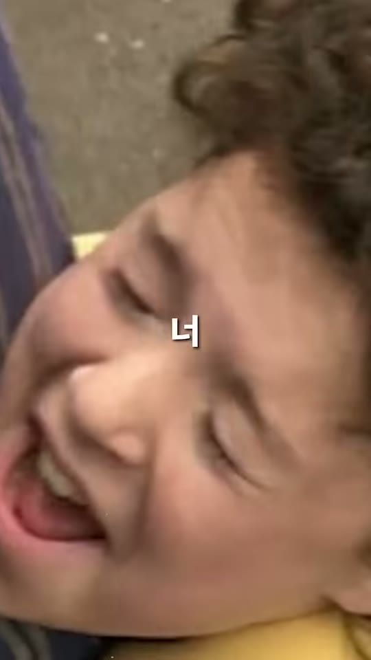
시작
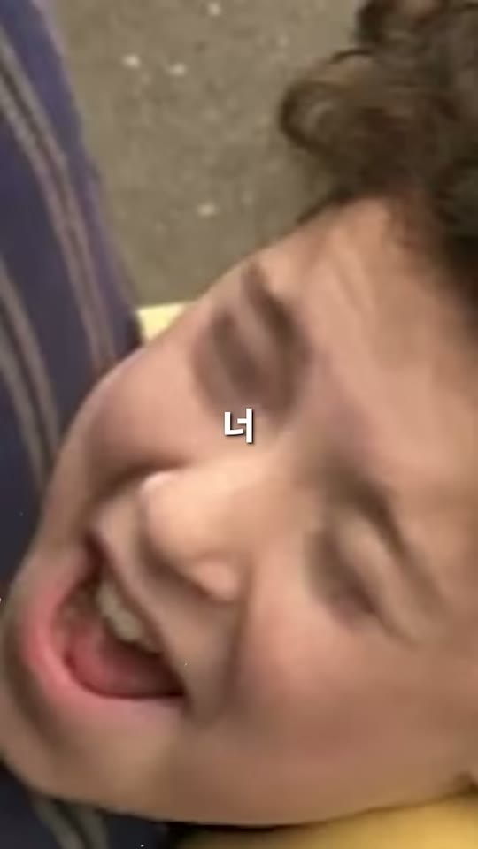
끝
우는 아이 얼굴
중앙 단어 자막
샷ECU(얼굴 초근접, 프레임 꽉 참)앵글약간 로우·기울어진 더치 앵글카메라핸드헬드 흔들림 + 0.1~0.2초 간격 줌 펄스(100↔115%). 병합 경계: 0.033/0.1/0.167/0.233/0.4/0.467/0.567/0.633(자막 단어 교체+줌 펄스 오검출)구도우는 아이 얼굴이 프레임 전체를 채움(풀블리드 9:16 크롭), 눈 질끈 감고 입 크게 벌림, 자막은 정중앙동작곱슬머리 남자아이가 얼굴을 찡그리며 오열, 고개를 흔듦대사내레이터(아이 흉내 톤, 추정): "너 없이 못 살아,"화면 자막'너' → '없이' → '못' → '살아' (한 단어씩, 흰색, 정중앙 y≈50%)들어오는 전환없음(콜드오픈 첫 프레임부터 절규 밈) — 0초 패턴 인터럽트효과음/음악BGM 즉시 시작(무음 구간 없음, LRA 2.3 = 강한 압축), 울음소리 원본 오디오 살짝 섞임(추정)역할훅: '집착' 감정을 과장된 밈으로 0.8초 만에 제시
1순위
seedance-2-5
감정 연기(우는 얼굴·절규) 클로즈업
2순위
kling-v3
실사 인물 동작 자연스러움
3순위
hailuo-2-3
과장 리액션
① 이미지 프롬프트 (원본 클론)vertical 9:16 608x1080, extreme close-up of a curly-haired 8-year-old fictional boy crying hysterically, eyes squeezed shut, mouth wide open, tears, slightly dutch angle, 1990s family-movie film look, warm soft daylight, shallow depth of field, grainy 35mm texture
② 영상 프롬프트 (원본 클론)0.8s: the boy wails and shakes his head side to side, handheld shake, two quick digital zoom pulses (100%->115%->100%), no camera cut. Audio: exaggerated sobbing.
③ 동물 버전 이미지 프롬프트vertical 9:16 608x1080, extreme close-up of a tiny fluffy golden-orange hamster crying dramatically, eyes squeezed shut, mouth wide open, big cartoon tears, whiskers trembling, warm soft daylight, shallow depth of field, cute realistic 3D fur, grainy film look
④ 동물 버전 영상 프롬프트0.8s: the hamster sobs and shakes its head, whiskers wobbling, two quick zoom pulses, handheld shake.
네거티브cartoon, anime, CGI look, plastic skin, text, letters, subtitles, captions, watermark, logo, trademarked cartoon characters, real celebrity likeness, extra limbs, extra fingers, deformed face, blurry, low resolution, jpeg artifacts
컷 10 · 훅 연장: 집착 상황을 시각적으로 완성
0.8s → 1.83s (1.03s)
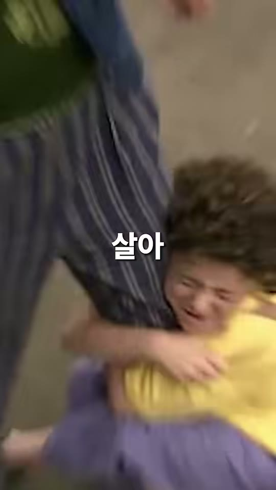
시작
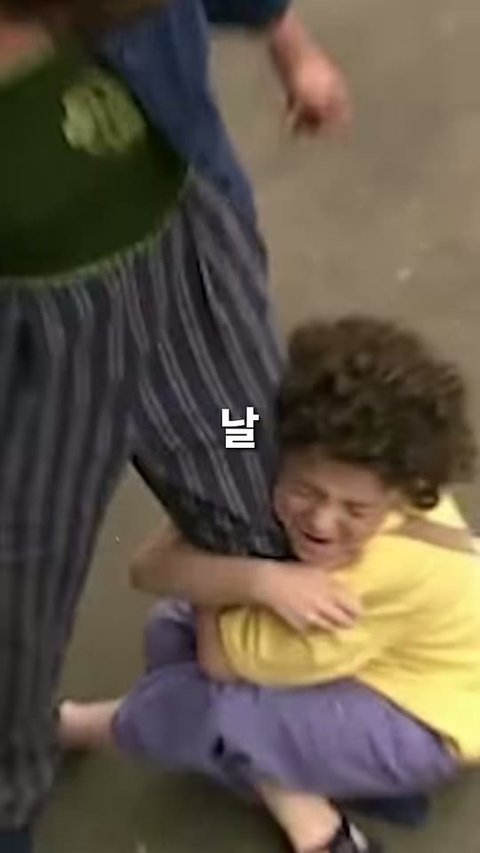
끝
아이
어른 다리
중앙 단어 자막
샷MS(하이앵글 전신)앵글하이앵글 부감카메라핸드헬드, 병합 경계: 1.033(자막 '떠나지'→'마!!!' 교체)구도화면 하단 1/3에 바닥에 앉은 아이, 상단에서 들어오는 어른 다리(줄무늬 바지)를 끌어안음, 대각선 구도동작아이가 떠나려는 어른의 다리에 매달려 끌려감대사내레이터: "날 떠나지 마!!!"화면 자막'날' → '떠나지' → '마!!!' (흰색, 정중앙)들어오는 전환하드컷(ECU→하이앵글 와이드, 같은 인물 매치 액션)효과음/음악BGM 지속, 발 끌리는 소리(추정)역할훅 연장: 집착 상황을 시각적으로 완성
1순위
hailuo-2-3
과장된 코믹 동작·빠른 리액션
2순위
pixverse-v6
카툰 스타일 밈 모션에 강함
3순위
grok-imagine-video-1-5
짧은 밈 루프 빠른 시안
① 이미지 프롬프트 (원본 클론)vertical 9:16 608x1080, high-angle shot looking down at a fictional boy in a yellow t-shirt sitting on a concrete floor clinging to an adult's leg in navy-striped pajama trousers, adult trying to walk away, 1990s family-movie look, soft daylight, film grain
② 영상 프롬프트 (원본 클론)1.0s: the adult steps forward dragging the boy who clings tighter, handheld high angle, slight shake.
③ 동물 버전 이미지 프롬프트vertical 9:16 608x1080, high-angle shot looking down at a tiny golden hamster clinging with all four paws to a giant striped sock of a human leg walking away on a wooden floor, soft daylight, cute realistic fur, film grain
④ 동물 버전 영상 프롬프트1.0s: the leg steps forward dragging the hamster who clings tighter, legs flailing comically, handheld.
네거티브cartoon, anime, CGI look, plastic skin, text, letters, subtitles, captions, watermark, logo, trademarked cartoon characters, real celebrity likeness, extra limbs, extra fingers, deformed face, blurry, low resolution, jpeg artifacts
컷 12 · 호스트 등장 + 문제 제기
1.83s → 3.43s (1.6s)
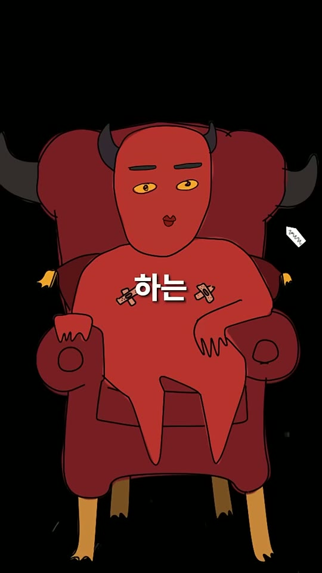
시작
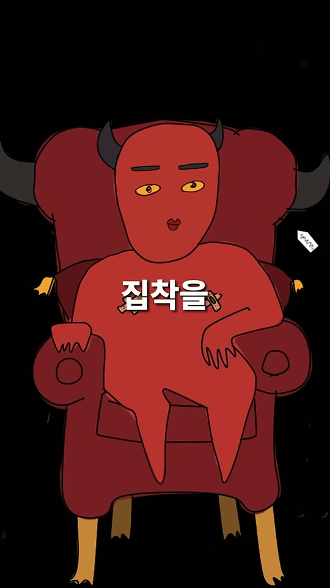
중간
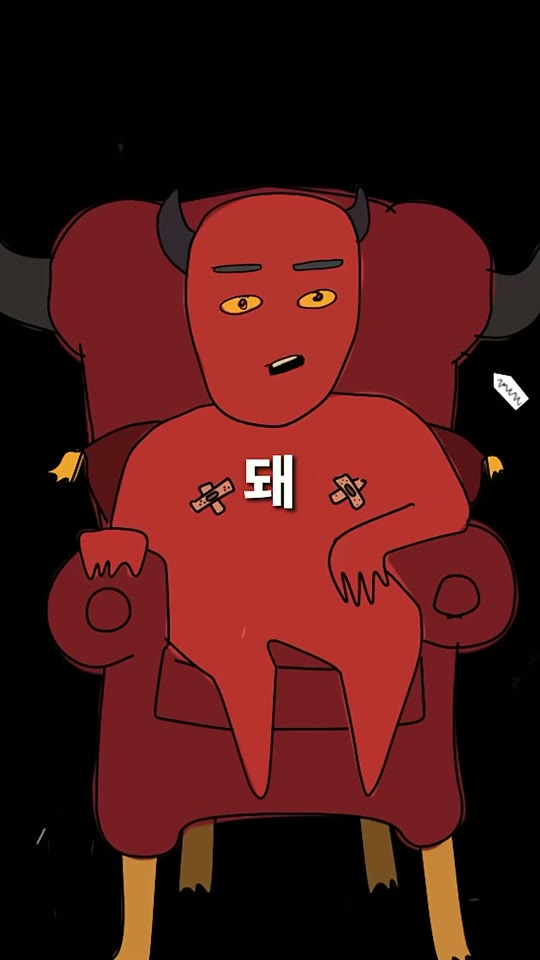
끝
악마+암체어
중앙 단어 자막
샷MWS(의자 전신)앵글아이레벨 정면카메라고정, 몸통 호흡 미세 움직임만구도검정 배경 중앙(프레임 y≈22~84%)에 붉은 윙백 암체어에 비스듬히 앉은 악마, 오른쪽에 작은 흰 태그 낙서, 자막은 가슴 위동작호스트 악마가 다리 꼬고 삐딱하게 앉아 입만 뻐끔거리며 말함대사알간지(내레이터): "하는 소모적인 집착을 하게 돼"화면 자막'소모적인' → '집착을' → '돼' (흰색, 정중앙)들어오는 전환하드컷(실사 밈→2D 호스트, 매체 전환으로 톤 리셋)효과음/음악BGM 지속역할호스트 등장 + 문제 제기
1순위
minimax-h3
립싱크+오디오 동시 생성, 무료 — 단순 2D 입모양이면 충분
2순위
kling-v3-omni
2D 캐릭터 일관성 + 대사 입모양
3순위
gemini-omni-1-1-flash
짧은 1초 내외 컷 빠른 생성
① 이미지 프롬프트 (원본 클론)vertical 9:16 608x1080, flat 2D hand-drawn cartoon devil, coral-red skin (#BF3E2A), thick slightly wobbly black ink outlines, two short curved charcoal-grey horns, heavy straight dark-grey eyebrows, half-lidded amber-orange eyes (#FAA325) with tiny dark pupils glancing sideways, deadpan expression, small mouth, two crossed beige bandage plasters on the chest, slouching cross-legged in a dark-red (#7E2621) wingback armchair with ochre wooden legs, centered, occupying the middle 62% of the frame height, small white price-tag doodle floating to the right, pure black background with sparse drifting white dust specks and film-scratch particles, flat colors, no shading
② 영상 프롬프트 (원본 클론)1.6s: the devil sits still, only the mouth flaps open and closed in simple 2-frame lip-sync, eyes glance sideways once, locked-off camera. Korean line: '하는 소모적인 집착을 하게 돼'
③ 동물 버전 이미지 프롬프트vertical 9:16 608x1080, flat 2D hand-drawn cartoon hamster 'Hamzzi', golden-orange fur with cream cheeks and belly, thick slightly wobbly black ink outlines, tiny charcoal devil-horn headband, heavy straight dark eyebrows, half-lidded shiny black bead eyes glancing sideways, deadpan expression, small pink mouth, two crossed beige bandage plasters on the chest, slouching cross-legged in a dark-red (#7E2621) wingback armchair with ochre wooden legs, centered, occupying the middle 62% of the frame height, pure black background with sparse drifting white dust specks and film-scratch particles, flat colors
④ 동물 버전 영상 프롬프트1.6s: Hamzzi sits still, only its small mouth flaps in 2-frame lip-sync, whiskers twitch, eyes glance sideways once, locked-off. Korean line: '하는 소모적인 집착을 하게 돼'
샷ECU(얼굴 초근접, 살짝 기울어짐)앵글아이레벨, 약 5° 롤카메라하드 펀치인(MWS→ECU 약 300%). 병합 경계: 4.133(0.034초 전환 프레임)구도얼굴이 프레임을 가득 채움, 눈은 y≈43%, 벌린 입 y≈60%, 자막은 눈과 입 사이 정중앙동작입을 동그랗게 벌리고 곁눈질로 시청자를 봄대사알간지: "힘드신가요?"화면 자막'힘드신가요?' (흰색, 정중앙)들어오는 전환펀치인 하드컷(같은 캐릭터 와이드→ECU) — 시청자에게 직접 질문하는 순간 강조효과음/음악BGM 지속, 펀치인에 짧은 '툭' 임팩트(추정)역할시청자 호명(질문 훅)
1순위
seedance-2-0
얼굴 초근접 미세표정(눈 굴림·입 벌림)
2순위
minimax-h3
대사 립싱크 포함 시
3순위
kling-v3
2D 스타일 유지력
① 이미지 프롬프트 (원본 클론)vertical 9:16 608x1080, extreme close-up of the face of a flat 2D hand-drawn cartoon devil, coral-red skin (#BF3E2A), thick slightly wobbly black ink outlines, two short curved charcoal-grey horns, heavy straight dark-grey eyebrows, half-lidded amber-orange eyes (#FAA325) with tiny dark pupils glancing sideways, deadpan expression, small mouth, two crossed beige bandage plasters on the chest, face fills the whole frame tilted 5 degrees, mouth open in a round 'O', dark-red armchair edge visible behind, flat colors
② 영상 프롬프트 (원본 클론)0.7s: mouth opens into an 'O' and closes, eyes slide toward camera, static camera. Korean line: '힘드신가요?'
③ 동물 버전 이미지 프롬프트vertical 9:16 608x1080, extreme close-up of the face of flat 2D hand-drawn cartoon hamster 'Hamzzi', golden-orange fur with cream cheeks and belly, thick slightly wobbly black ink outlines, tiny charcoal devil-horn headband, heavy straight dark eyebrows, half-lidded shiny black bead eyes glancing sideways, deadpan expression, small pink mouth, two crossed beige bandage plasters on the chest, face fills the frame tilted 5 degrees, mouth open in a small round 'O', flat colors
④ 동물 버전 영상 프롬프트0.7s: Hamzzi's mouth opens into an 'O', cheeks puff, eyes slide toward camera. Korean line: '힘드신가요?'
샷MS(풀블리드 크롭)앵글아이레벨카메라고정(원본 애니 컷 그대로), 병합 경계: 5.167/5.267/5.5/5.533/6.5/6.833/6.933(자막 교체·캐릭터 퇴장)구도16:9 원본을 9:16로 꽉 채워 크롭, 둥근 문 앞 캐릭터가 오른쪽을 가리킨 뒤 문 밖으로 퇴장 → 빈 문만 남음동작노란 스펀지 캐릭터가 음흉하게 웃으며 '이쪽이야' 손짓 후 문 밖으로 사라짐대사알간지: "여기 집착에서 벗어나게 해주는 개꿀팁 심리학 기술이 있습니다"화면 자막'여기'→'집착에서'→'벗어나게'→'해주는'→'개꿀팁'→'심리학'→'기술이'→'있습니다' (흰색 단어 팝)들어오는 전환하드컷(호스트→밈 B롤)효과음/음악BGM 지속, 퇴장 시 휙 whoosh(추정)역할약속(개꿀팁 제시) — 호기심 갭
1순위
hailuo-2-3
과장된 코믹 동작·빠른 리액션
2순위
pixverse-v6
카툰 스타일 밈 모션에 강함
3순위
grok-imagine-video-1-5
짧은 밈 루프 빠른 시안
① 이미지 프롬프트 (원본 클론)vertical 9:16 608x1080, original 2D cartoon: a goofy yellow kitchen-sponge mascot with buck teeth standing in front of a round blue porthole door inside an underwater wooden house, sly grin, pointing to the right, bright saturated flat colors, generic original design (not SpongeBob)
② 영상 프롬프트 (원본 클론)3.0s: the sponge mascot grins slyly, beckons 'this way' with a finger, then struts out through the round door leaving the doorway empty, locked-off camera.
③ 동물 버전 이미지 프롬프트vertical 9:16 608x1080, 2D cartoon: Hamzzi the golden hamster (same flat hand-drawn style, thick black outlines) standing in front of a round blue porthole door of a cozy wooden burrow, sly grin, pointing to the right, bright flat colors
④ 동물 버전 영상 프롬프트3.0s: Hamzzi grins slyly, beckons 'this way' with a paw, then scurries out through the round door leaving it empty, locked-off.
샷ECU앵글아이레벨, 약 5° 롤카메라고정(3.43초 ECU와 동일 프레이밍 재사용)구도얼굴이 프레임 가득, 자막은 입 위 정중앙동작입술을 오므렸다가 '바로'에서 이를 드러내며 씩 웃음대사알간지: "뭘까요? 바로"화면 자막'뭘까요?' → '바로' (흰색, 작게 시작해 커지는 팝)들어오는 전환하드컷(밈→호스트 ECU 복귀)효과음/음악BGM 지속, 드럼 필/라이저(추정)역할정답 직전 서스펜스(질문-정답 브릿지)
1순위
seedance-2-0
얼굴 초근접 미세표정(눈 굴림·입 벌림)
2순위
minimax-h3
대사 립싱크 포함 시
3순위
kling-v3
2D 스타일 유지력
① 이미지 프롬프트 (원본 클론)vertical 9:16 608x1080, extreme close-up of the face of a flat 2D hand-drawn cartoon devil, coral-red skin (#BF3E2A), thick slightly wobbly black ink outlines, two short curved charcoal-grey horns, heavy straight dark-grey eyebrows, half-lidded amber-orange eyes (#FAA325) with tiny dark pupils glancing sideways, deadpan expression, small mouth, two crossed beige bandage plasters on the chest, lips pursed in a small pout, face fills the frame, flat colors
② 영상 프롬프트 (원본 클론)0.7s: lips purse on '뭘까요?' then pull into a toothy smirk on '바로', eyes shift, static. Korean line: '뭘까요? 바로'
③ 동물 버전 이미지 프롬프트vertical 9:16 608x1080, extreme close-up of the face of flat 2D hand-drawn cartoon hamster 'Hamzzi', golden-orange fur with cream cheeks and belly, thick slightly wobbly black ink outlines, tiny charcoal devil-horn headband, heavy straight dark eyebrows, half-lidded shiny black bead eyes glancing sideways, deadpan expression, small pink mouth, two crossed beige bandage plasters on the chest, lips pursed, face fills the frame, flat colors
④ 동물 버전 영상 프롬프트0.7s: Hamzzi purses lips then flashes a toothy smirk showing two front teeth. Korean line: '뭘까요? 바로'
샷텍스트 카드앵글정면카메라고정, 텍스트 페이드인구도검정+먼지 파티클 배경 정중앙(y≈50%)에 빨간 굵은 텍스트 1줄동작텍스트만 등장대사알간지: "New Look 이론이죠"화면 자막'New Look 이론' 빨강 #B30005 굵은 고딕, 약 44px들어오는 전환하드컷 + 텍스트 0.2초 페이드인효과음/음악BGM 지속, 띵/딩 효과음(추정)역할정답 제시(개념 명명)
1순위
(AI 불필요) FFmpeg/HyperFrames 그래픽
검정 배경+텍스트/원 도형만으로 구성
2순위
(Pollo 이미지 모델 중 레퍼런스 지원 모델)
동전 스티커 PNG 1장만 생성
3순위
wan-v3-0
먼지 파티클 배경 루프가 필요할 때
① 이미지 프롬프트 (원본 클론)vertical 9:16 608x1080, pure black background with sparse drifting white dust specks and film-scratch particles, centered bold red text area left empty (text added in edit)
② 영상 프롬프트 (원본 클론)0.9s: static black card with drifting dust particles; text is composited in FFmpeg.
③ 동물 버전 이미지 프롬프트vertical 9:16 608x1080, pure black background with sparse drifting white dust specks and film-scratch particles, tiny golden hamster paw print doodle in the corner
④ 동물 버전 영상 프롬프트0.9s: static black card, dust drifting; title text composited in edit.
네거티브text, letters, subtitles, captions, watermark, logo, trademarked cartoon characters, real celebrity likeness, extra limbs, extra fingers, deformed face, blurry, low resolution, jpeg artifacts
컷 25 · 권위 부여(실존 학자 = 신뢰)
8.8s → 9.53s (0.73s)
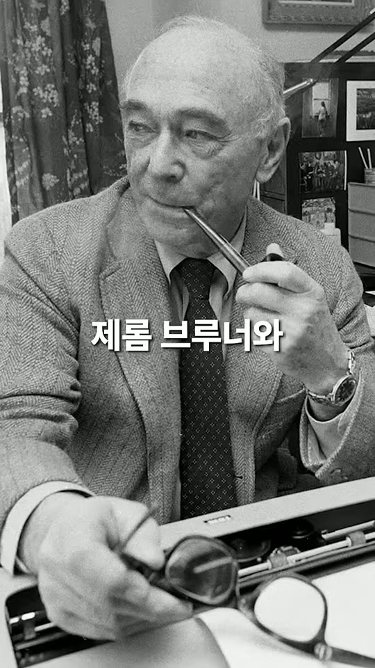
시작
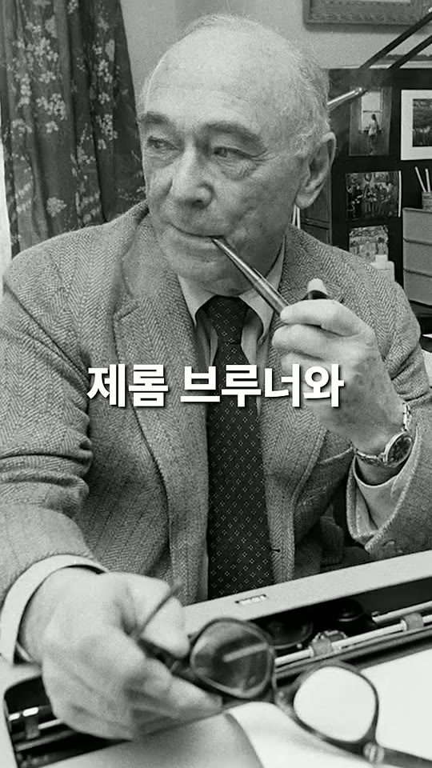
중간
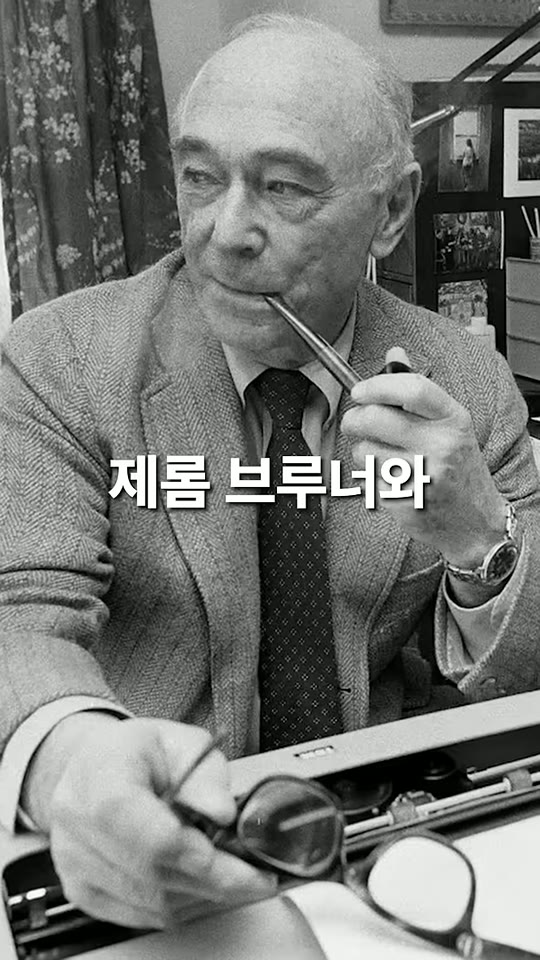
끝
노학자 사진
중앙 단어 자막
샷MCU(흑백 인물 사진)앵글아이레벨카메라고정 스틸(켄번즈 없음 추정)구도풀블리드 흑백 사진, 인물은 중앙~좌측, 파이프를 문 노학자동작안경을 든 노학자가 파이프를 물고 카메라를 봄(실존 인물 사진)대사알간지: "제롬 브루너와"화면 자막'제롬 브루너와' (흰색)들어오는 전환하드컷효과음/음악BGM 지속역할권위 부여(실존 학자 = 신뢰)
1순위
veo-3-1
실사 와이드·건물·환경 디테일
2순위
kling-v3
느린 카메라 무브 안정적
3순위
wan-v3-0
저비용 환경 컷
① 이미지 프롬프트 (원본 클론)vertical 9:16 608x1080, black-and-white archival-style portrait photo of a fictional elderly male psychology professor in his 70s, tweed jacket, tie, holding eyeglasses, smoking a pipe, cluttered office with photos on the wall, 1980s documentary photo, film grain
② 영상 프롬프트 (원본 클론)0.7s: still photo with a very slow 102% push-in (optional).
③ 동물 버전 이미지 프롬프트vertical 9:16 608x1080, black-and-white archival-style portrait photo of an elderly hamster professor in a tweed jacket and tie, holding tiny eyeglasses, pipe in mouth, cluttered office, film grain, realistic fur
④ 동물 버전 영상 프롬프트0.7s: still photo, very slow push-in.
네거티브cartoon, anime, CGI look, plastic skin, text, letters, subtitles, captions, watermark, logo, trademarked cartoon characters, real celebrity likeness, extra limbs, extra fingers, deformed face, blurry, low resolution, jpeg artifacts, real person likeness
① 이미지 프롬프트 (원본 클론)vertical 9:16 608x1080, symmetrical front view of a stately red-brick Georgian university library with white columns, green doors and a white cupola clock tower, blue sky with clouds, bright daylight, architectural photo, fictional campus
② 영상 프롬프트 (원본 클론)2.1s: static shot or subtle 103% push-in, clouds drifting slightly.
③ 동물 버전 이미지 프롬프트vertical 9:16 608x1080, symmetrical front view of a stately red-brick Georgian 'Hamster University' library with white columns and cupola, blue sky, a tiny hamster standing at the green door, architectural photo
④ 동물 버전 영상 프롬프트2.1s: subtle push-in, clouds drift, tiny hamster waves at the door.
네거티브cartoon, anime, CGI look, plastic skin, text, letters, subtitles, captions, watermark, logo, trademarked cartoon characters, real celebrity likeness, extra limbs, extra fingers, deformed face, blurry, low resolution, jpeg artifacts
컷 27 · 실험 설정 설명
11.63s → 13.23s (1.6s)
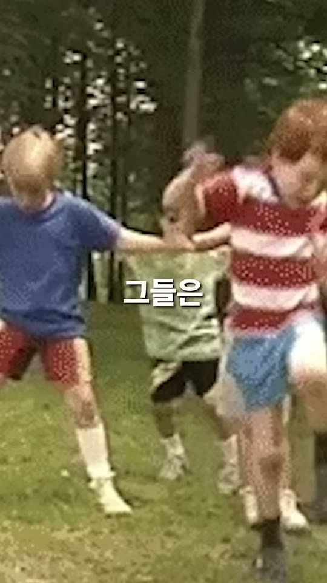
시작
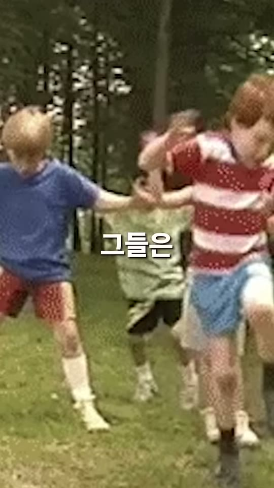
끝
아이들
중앙 단어 자막
샷MWS(실사 아이들 무리)앵글아이레벨카메라핸드헬드 옛날 필름(프레임 중복 → 0.07초 간격 오검출). 병합 경계: 11.8~13.2 사이 19개 마이크로컷구도풀블리드, 숲 속 풀밭에서 아이들이 카메라 쪽으로 뛰어옴동작10살 남짓 아이들이 줄지어 뛰어오며 팔을 흔듦대사알간지: "그들은 10세 어린이 30명을 모아"화면 자막'그들은' → '어린이' → '10세' → '30명을' (흰색)들어오는 전환하드컷효과음/음악BGM 지속역할실험 설정 설명
1순위
veo-3-1
실사 와이드·건물·환경 디테일
2순위
kling-v3
느린 카메라 무브 안정적
3순위
wan-v3-0
저비용 환경 컷
① 이미지 프롬프트 (원본 클론)vertical 9:16 608x1080, 1990s summer-camp home-video look: a group of fictional 10-year-old kids in striped t-shirts and shorts running toward the camera across a grassy forest clearing, VHS softness, warm daylight
② 영상 프롬프트 (원본 클론)1.6s: kids run toward the camera waving arms, handheld, slight frame stutter like old footage.
③ 동물 버전 이미지 프롬프트vertical 9:16 608x1080, a group of tiny hamsters in striped t-shirts running toward the camera across a grassy forest clearing, VHS softness, warm daylight, cute realistic fur
④ 동물 버전 영상 프롬프트1.6s: hamsters scamper toward camera waving paws, handheld, old-footage stutter.
네거티브cartoon, anime, CGI look, plastic skin, text, letters, subtitles, captions, watermark, logo, trademarked cartoon characters, real celebrity likeness, extra limbs, extra fingers, deformed face, blurry, low resolution, jpeg artifacts
컷 47 · 비교군 시각화
13.23s → 15.43s (2.2s)
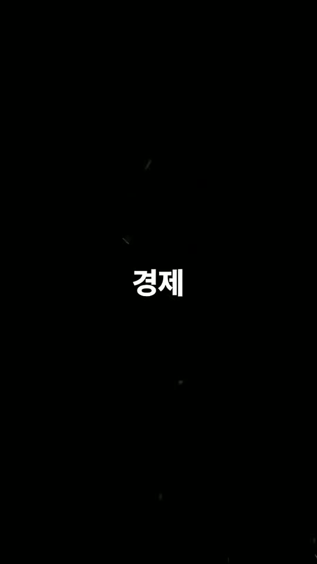
시작
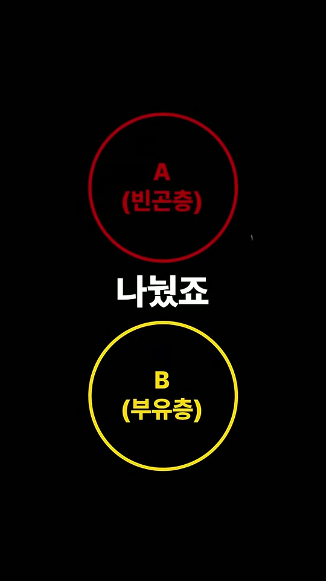
끝
A 빨간 원
B 노란 원
중앙 단어 자막
샷그래픽 카드앵글정면카메라고정, 원 2개 순차 페이드인(13.5s A, 14.0s B)구도검정 배경. 상단 빨간 원(중심 y≈31%, 지름≈46% 폭) 'A (빈곤층)', 하단 노란 원(중심 y≈68%) 'B (부유층)', 가운데 y≈50% 단어 자막동작도형 애니메이션만대사알간지: "경제 상태에 따라 A그룹, B그룹으로 나눴죠"화면 자막'경제' → '상태에' → '나눴죠' (흰색) / 원 안: 'A (빈곤층)' 빨강 #B20008, 'B (부유층)' 노랑 #FED401들어오는 전환하드컷 + 원 0.3초 페이드인효과음/음악BGM 지속, 원 등장마다 뿅(추정)역할비교군 시각화
1순위
(AI 불필요) FFmpeg/HyperFrames 그래픽
검정 배경+텍스트/원 도형만으로 구성
2순위
(Pollo 이미지 모델 중 레퍼런스 지원 모델)
동전 스티커 PNG 1장만 생성
3순위
wan-v3-0
먼지 파티클 배경 루프가 필요할 때
① 이미지 프롬프트 (원본 클론)vertical 9:16 608x1080, pure black background with sparse drifting white dust specks and film-scratch particles, two empty circle outlines stacked vertically, top red (#B20008), bottom yellow (#FED401), thin 4px strokes
② 영상 프롬프트 (원본 클론)2.2s: graphic only, circles fade in sequentially; built in FFmpeg/HyperFrames.
③ 동물 버전 이미지 프롬프트vertical 9:16 608x1080, pure black background with sparse drifting white dust specks and film-scratch particles, two circle outlines stacked vertically, top red, bottom yellow, a tiny hamster icon inside each
④ 동물 버전 영상 프롬프트2.2s: circles fade in sequentially; graphic only.
네거티브text, letters, subtitles, captions, watermark, logo, trademarked cartoon characters, real celebrity likeness, extra limbs, extra fingers, deformed face, blurry, low resolution, jpeg artifacts
컷 48 · 실험 도구 제시
15.43s → 16.7s (1.27s)
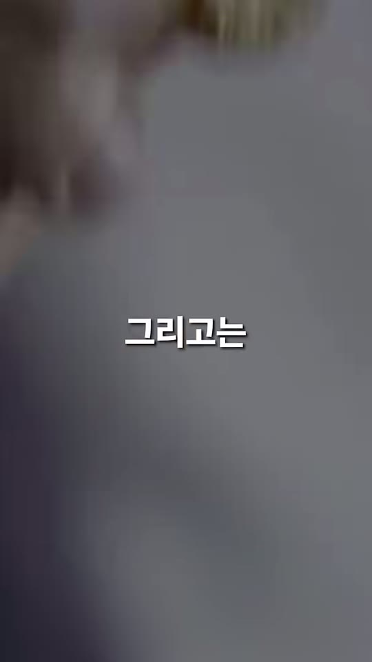
시작
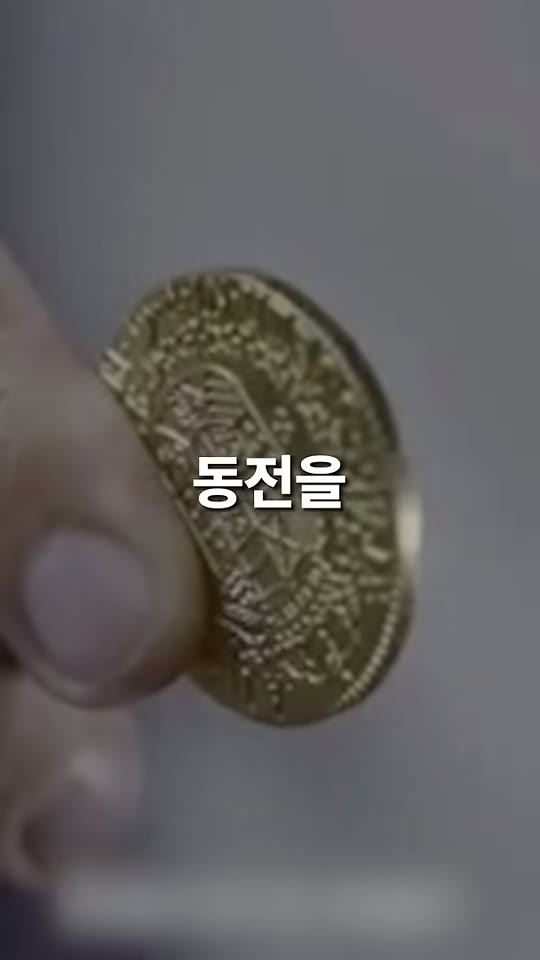
중간
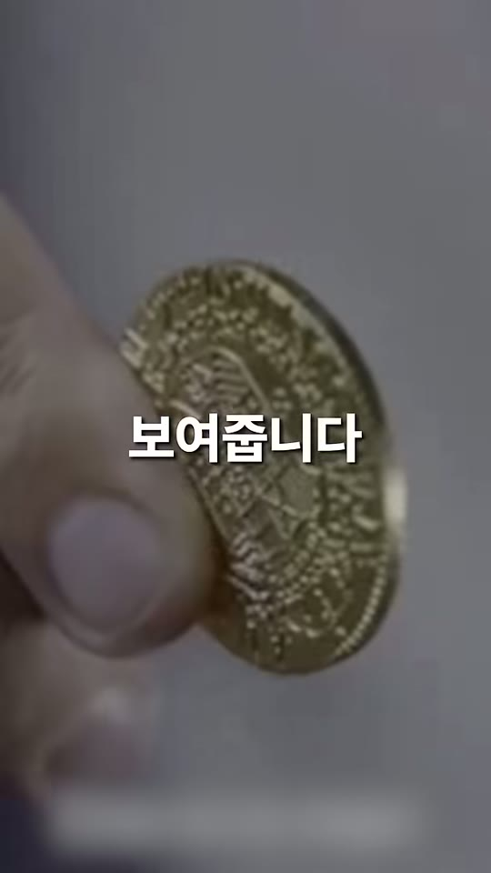
끝
손+동전
중앙 단어 자막
샷ECU(손+동전)앵글아이레벨카메라고정, 미세 핸드헬드구도풀블리드, 회색 배경, 엄지와 검지가 금색 동전을 비스듬히 잡음, 화면 중앙동작손가락으로 동전을 돌려 보여줌대사알간지: "그리고는 동전을 보여줍니다"화면 자막'동전을' → '보여줍니다' (흰색)들어오는 전환하드컷효과음/음악BGM 지속, 동전 짤랑(추정)역할실험 도구 제시
1순위
veo-3-1
실사 와이드·건물·환경 디테일
2순위
kling-v3
느린 카메라 무브 안정적
3순위
wan-v3-0
저비용 환경 컷
① 이미지 프롬프트 (원본 클론)vertical 9:16 608x1080, macro close-up of fingers holding a shiny engraved gold coin tilted toward camera, plain soft grey background, shallow depth of field, soft studio light
② 영상 프롬프트 (원본 클론)1.3s: fingers slowly rotate the coin catching light, slight handheld drift.
③ 동물 버전 이미지 프롬프트vertical 9:16 608x1080, macro close-up of two tiny hamster paws holding a shiny gold coin almost as big as the paws, plain soft grey background, shallow depth of field
④ 동물 버전 영상 프롬프트1.3s: the hamster paws wobble while rotating the heavy coin, light glints.
네거티브cartoon, anime, CGI look, plastic skin, text, letters, subtitles, captions, watermark, logo, trademarked cartoon characters, real celebrity likeness, extra limbs, extra fingers, deformed face, blurry, low resolution, jpeg artifacts
컷 49 · 실험 절차 설명(귀여운 밈으로 지루함 방지)
16.7s → 20.77s (4.07s)
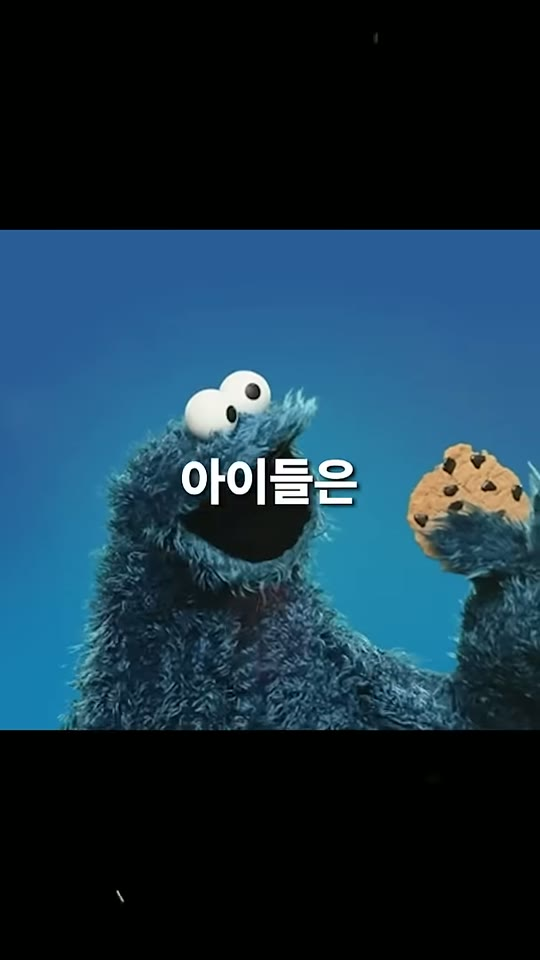
시작
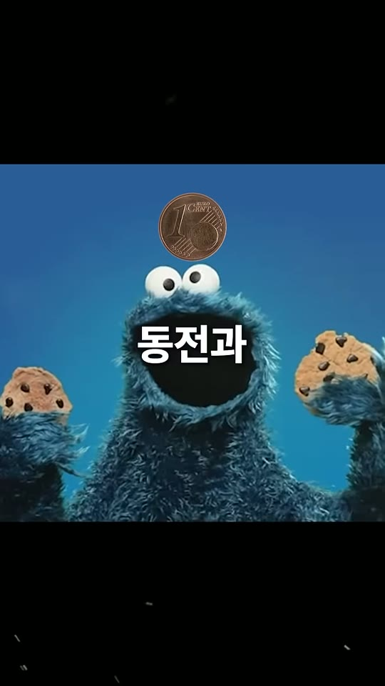
중간
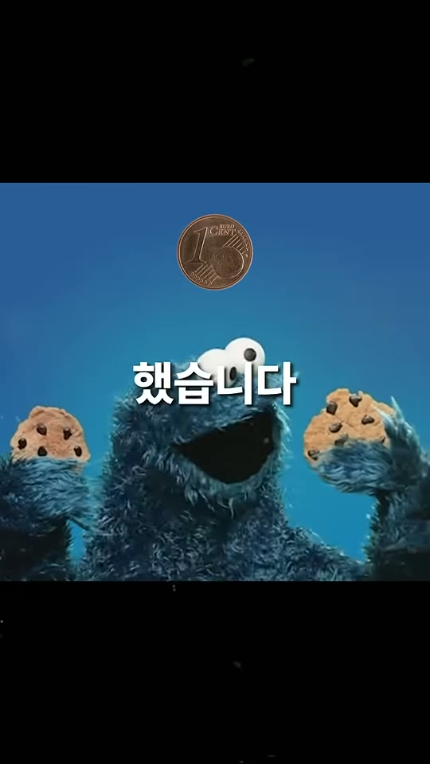
끝
영상 밴드
동전 스티커
중앙 단어 자막
샷MCU(레터박스 밴드)앵글아이레벨카메라고정(원본 클립), 동전 스티커는 머리 위에 고정 합성구도검정+먼지 배경 위 밴드 y≈24~76%, 파란 배경의 털복숭이 인형이 쿠키를 양손에 들고 있음, 머리 위 y≈32%에 동전 PNG동작파란 털 인형이 눈알을 굴리며 입을 크게 벌림대사알간지: "아이들은 동전을 보고 다른 방에 들어가 동전과 똑같은 크기의 원을 골라야 했습니다"화면 자막'아이들은'→'동전을'→'다른'→'들어가'→'동전과'→'똑같은'→'원을'→'골라야'→'했습니다' (흰색)들어오는 전환하드컷(풀블리드→레터박스로 전환)효과음/음악BGM 지속역할실험 절차 설명(귀여운 밈으로 지루함 방지)
1순위
hailuo-2-3
과장된 코믹 동작·빠른 리액션
2순위
pixverse-v6
카툰 스타일 밈 모션에 강함
3순위
grok-imagine-video-1-5
짧은 밈 루프 빠른 시안
① 이미지 프롬프트 (원본 클론)vertical 9:16 608x1080, pure black background with sparse drifting white dust specks and film-scratch particles, in the middle band (y 24%-76%) an original fuzzy blue googly-eyed puppet monster holding a chocolate-chip cookie in each hand against a plain blue studio backdrop, mouth open wide, generic original design (not Cookie Monster)
② 영상 프롬프트 (원본 클론)4.0s: the puppet rolls its googly eyes toward a coin floating above its head and opens its mouth wide, locked-off.
③ 동물 버전 이미지 프롬프트vertical 9:16 608x1080, pure black background with sparse drifting white dust specks and film-scratch particles, in the middle band (y 24%-76%) Hamzzi the fluffy golden hamster holding a sunflower-seed cookie in each paw against a plain blue backdrop, looking up at a coin floating above its head
④ 동물 버전 영상 프롬프트4.0s: Hamzzi stares up at the coin, cheeks puff, stuffs a cookie in, locked-off.
네거티브text, letters, subtitles, captions, watermark, logo, trademarked cartoon characters, real celebrity likeness, extra limbs, extra fingers, deformed face, blurry, low resolution, jpeg artifacts
컷 50 · 실험 결과(핵심 근거) — 색으로 두 집단 대비
20.77s → 27.23s (6.46s)
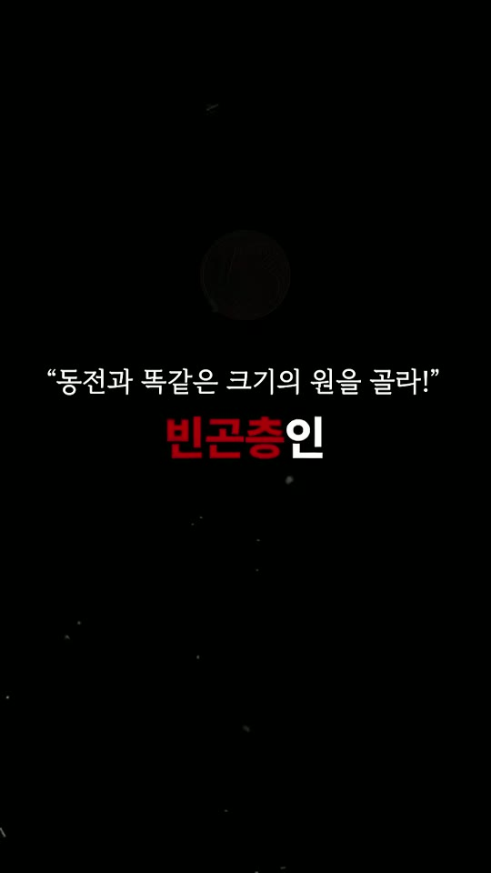
시작
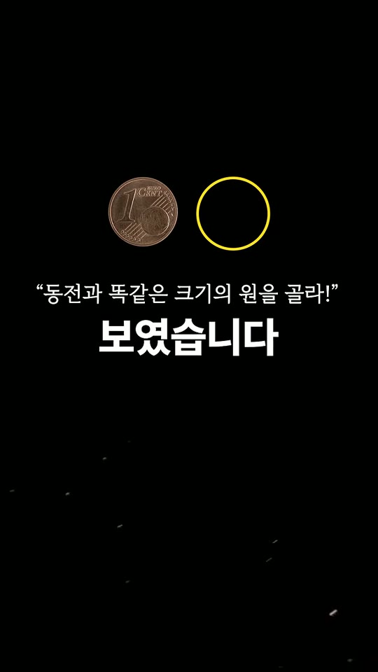
끝
동전
비교 원
인용 소자막
중앙 단어 자막
샷그래픽 카드앵글정면카메라고정, 원 도형 애니메이션(22.5s 빨간 큰 원 등장 → 24.0s 리셋 → 25.0s 노란 같은 크기 원 등장). cuts.json 단일 샷구도검정 배경, 동전(y≈31%, 좌측 x≈42%) + 옆 원(x≈62%), 인용 소자막 y≈43% "동전과 똑같은 크기의 원을 골라!", 단어 자막 y≈50%동작동전 옆에 빨간 원(더 큼) → 노란 원(비슷함)이 그려짐대사알간지: "빈곤층인 아이들은 실제 동전보다 더 큰 크기의 원을 골랐고, 부유층인 아이들은 실제 동전과 비슷한 크기의 원을 고르며 차이를 보였습니다"화면 자막'빈곤층인'(빈곤층 빨강 #B20008)→'실제'→'동전보다'→'큰'(빨강)→'원을'→'골랐고'→'아이들은'→'실제'→'비슷한'(노랑 #FED401)→'크기의'→'고르며'→'보였습니다' / 상단 고정 인용문 흰색 소형(≈18px)들어오는 전환하드컷효과음/음악BGM 지속, 원 그려질 때 슉(추정)역할실험 결과(핵심 근거) — 색으로 두 집단 대비
1순위
(AI 불필요) FFmpeg/HyperFrames 그래픽
검정 배경+텍스트/원 도형만으로 구성
2순위
(Pollo 이미지 모델 중 레퍼런스 지원 모델)
동전 스티커 PNG 1장만 생성
3순위
wan-v3-0
먼지 파티클 배경 루프가 필요할 때
① 이미지 프롬프트 (원본 클론)vertical 9:16 608x1080, pure black background with sparse drifting white dust specks and film-scratch particles, a copper coin icon at upper-left-center and an empty space to its right for an animated circle outline
② 영상 프롬프트 (원본 클론)6.5s: graphic only: a red circle bigger than the coin draws on, then resets, then a yellow circle the same size as the coin draws on.
③ 동물 버전 이미지 프롬프트vertical 9:16 608x1080, pure black background with sparse drifting white dust specks and film-scratch particles, a copper coin icon and a small hamster paw pointing at it
④ 동물 버전 영상 프롬프트6.5s: graphic only; circles draw on as in original, a hamster paw icon taps the coin.
네거티브text, letters, subtitles, captions, watermark, logo, trademarked cartoon characters, real celebrity likeness, extra limbs, extra fingers, deformed face, blurry, low resolution, jpeg artifacts
컷 51 · 연구 결론 도입 — '객관적으로 본다'의 시각 은유
27.23s → 30.83s (3.6s)
시작
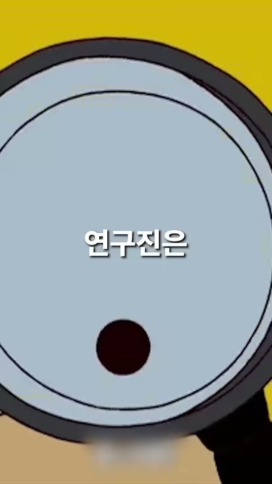
중간
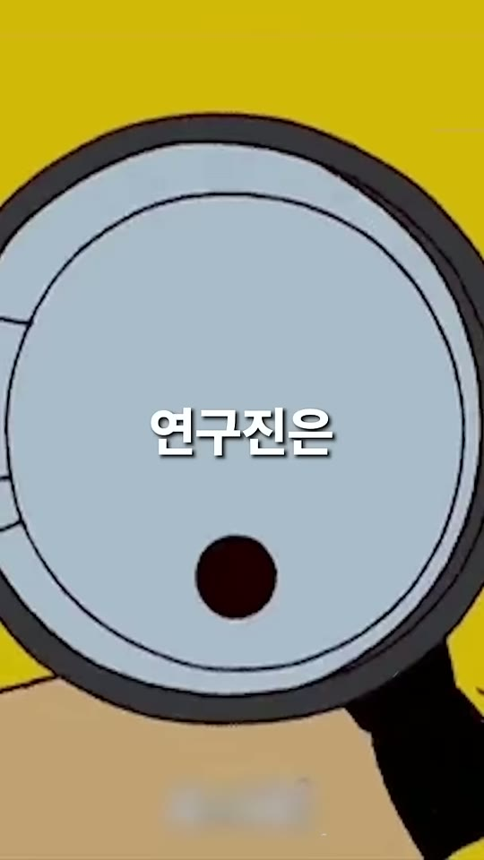
끝
돋보기 렌즈
중앙 단어 자막
샷ECU↔MCU 교차(돋보기)앵글아이레벨 정면카메라하드 펀치인/아웃 반복(100%↔약 180%). 병합 경계: 27.767/27.833/27.9/28.367/28.967/29.033/29.6/30.2/30.267구도풀블리드. ECU: 돋보기 렌즈가 화면을 꽉 채우고 커다란 눈동자 하나. MCU: 노란 피부 아저씨가 돋보기를 눈에 대고 봄동작노란 카툰 아저씨가 돋보기로 뚫어지게 관찰, 컷마다 거리 교차대사알간지: "연구진은 사람은 주어진 정보만을 보고 객관적으로 판단하는 존재가 아닌"화면 자막'연구진은'→'사람은'→'주어진'→'정보만을'→'객관적으로'→'판단하는'→'존재가'→'아닌' (흰색, 작게→크게 팝)들어오는 전환하드컷 후 단어마다 펀치인 교차(리듬 = 단어 박자)효과음/음악BGM 지속, 펀치 때 '틱' (추정)역할연구 결론 도입 — '객관적으로 본다'의 시각 은유
1순위
hailuo-2-3
과장된 코믹 동작·빠른 리액션
2순위
pixverse-v6
카툰 스타일 밈 모션에 강함
3순위
grok-imagine-video-1-5
짧은 밈 루프 빠른 시안
① 이미지 프롬프트 (원본 클론)vertical 9:16 608x1080, original 2D cartoon: a balding yellow-skinned cartoon dad in a white shirt holding a big magnifying glass to one eye, the lens magnifies his huge eye, suburban backyard fence behind, bright flat colors, generic original design (not The Simpsons)
② 영상 프롬프트 (원본 클론)3.6s: he peers through the magnifying glass moving it slightly; edit alternates extreme close-up of the lens and medium close-up every ~0.5s.
③ 동물 버전 이미지 프롬프트vertical 9:16 608x1080, 2D cartoon: Hamzzi the golden hamster holding a huge magnifying glass to one eye, the lens magnifies a giant shiny black eye, backyard fence behind, bright flat colors, thick black outlines
④ 동물 버전 영상 프롬프트3.6s: Hamzzi peers through the magnifying glass, eye blinks huge in the lens; edit alternates ECU/MCU punch-ins.
샷WS(레터박스 밴드)앵글아이레벨 측면카메라고정(원본 애니, 캐릭터 제자리 걷기)구도밴드 y≈26~74%, 해저 모래 배경을 뻣뻣하게 걷는 캐릭터가 중앙동작선원 모자 쓴 스펀지 캐릭터가 거만하게 팔 휘저으며 걸음대사알간지: "본인의 환경을 토대로 주관적인 판단을 내리는 존재이며"화면 자막'본인의'→'환경을'→'토대로'→'주관적인'→'판단을'→'존재이며' (흰색)들어오는 전환하드컷(풀블리드→레터박스)효과음/음악BGM 지속역할주관성 개념을 코믹 워킹으로 표현
1순위
hailuo-2-3
과장된 코믹 동작·빠른 리액션
2순위
pixverse-v6
카툰 스타일 밈 모션에 강함
3순위
grok-imagine-video-1-5
짧은 밈 루프 빠른 시안
① 이미지 프롬프트 (원본 클론)vertical 9:16 608x1080, pure black background with sparse drifting white dust specks and film-scratch particles, middle band (y 26%-74%) original 2D cartoon: a yellow sponge mascot in a tiny sailor hat strutting stiffly with swinging arms across a sandy underwater seabed, flower-shaped clouds in the sky, generic original design
② 영상 프롬프트 (원본 클론)2.9s: the mascot struts proudly in place, arms swinging, background scrolls, locked-off.
③ 동물 버전 이미지 프롬프트vertical 9:16 608x1080, pure black background with sparse drifting white dust specks and film-scratch particles, middle band (y 26%-74%) 2D cartoon Hamzzi in a tiny sailor hat strutting proudly across a sandy seabed, thick black outlines, bright flat colors
④ 동물 버전 영상 프롬프트2.9s: Hamzzi struts proudly, arms swinging, background scrolls.
샷WS(레터박스 밴드, 실사 군중)앵글아이레벨카메라핸드헬드 미세 흔들림 + 자막 교체(0.07~0.17초 간격 48개 마이크로컷 오검출). 병합 경계 33.867~38.867구도밴드 y≈32~68%(정확한 16:9), 종이 왕관 쓴 유치원생 무리가 환호동작종이 왕관 쓴 아이들이 손을 흔들며 환호하고 점프대사알간지: "아이들의 환경 차이에 따라 돈에 대한 인식과 욕망이 달랐기 때문에 이러한 차이가 발생했다고 말했습니다"화면 자막'아이들의'→'환경'→'차이에'→'따라'→'돈에'→'인식과'→'욕망이'→'달랐기'→'이러한'→'발생했다고'→'말했습니다' (흰색)들어오는 전환하드컷효과음/음악BGM 지속, 아이들 환호 원본음 약하게(추정)역할연구 해석 마무리(긴 문장을 신나는 B롤로 버팀)
1순위
veo-3-1
실사 와이드·건물·환경 디테일
2순위
kling-v3
느린 카메라 무브 안정적
3순위
wan-v3-0
저비용 환경 컷
① 이미지 프롬프트 (원본 클론)vertical 9:16 608x1080, pure black background with sparse drifting white dust specks and film-scratch particles, middle 16:9 band (y 32%-68%) a crowd of fictional kindergarten kids wearing white paper crowns cheering and waving at a birthday party, colorful banner behind, bright daylight, candid video look
② 영상 프롬프트 (원본 클론)5.2s: kids jump and cheer waving hands, handheld slight shake.
③ 동물 버전 이미지 프롬프트vertical 9:16 608x1080, pure black background with sparse drifting white dust specks and film-scratch particles, middle 16:9 band (y 32%-68%) a crowd of tiny hamsters wearing white paper crowns cheering and waving at a party, colorful banner, bright daylight, cute realistic fur
④ 동물 버전 영상 프롬프트5.2s: hamsters hop and cheer waving paws, handheld slight shake.
네거티브cartoon, anime, CGI look, plastic skin, text, letters, subtitles, captions, watermark, logo, trademarked cartoon characters, real celebrity likeness, extra limbs, extra fingers, deformed face, blurry, low resolution, jpeg artifacts
컷 110 · 적용 전환(연구→내 얘기), 거부 제스처로 공감
38.93s → 41.23s (2.3s)
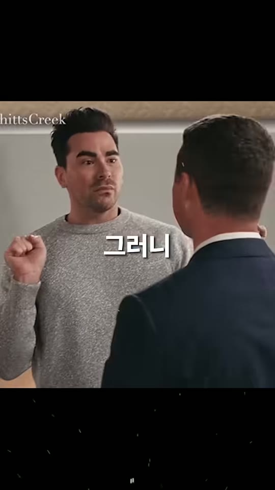
시작
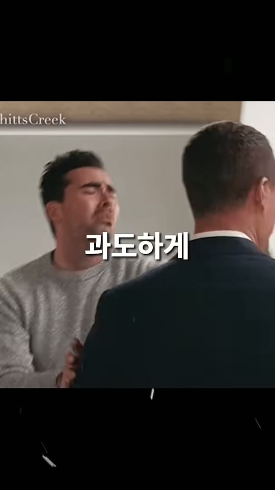
끝
영상 밴드
NO 텍스트
중앙 단어 자막
샷MS 2인(레터박스 밴드)앵글아이레벨 OTS카메라고정(원본 드라마 클립), 병합 경계: 40.167/40.3/40.4/40.7(NO 텍스트 팝 3회)구도밴드 y≈21~79%, 좌측 회색 니트 남자가 우측(뒷모습) 정장 남자에게 손짓, 하단 y≈66%에 'NO' 텍스트가 1→3개로 늘어남동작니트 남자가 눈을 질끈 감고 'NO' 하며 과장되게 손을 휘저음대사알간지: "그러니 내가 누군가에 과도하게 집착을 하고 있다면"화면 자막'그러니'→'내가'→'누군가에'→'과도하게'→'집착을'→'하고'→'있다면' (흰색) + 하단 'NO' → 'NO NO NO'(첫 NO 노랑 #FED401, 나머지 흰색)들어오는 전환하드컷효과음/음악BGM 지속, NO 팝마다 뿅(추정)역할적용 전환(연구→내 얘기), 거부 제스처로 공감
1순위
hailuo-2-3
과장된 코믹 동작·빠른 리액션
2순위
pixverse-v6
카툰 스타일 밈 모션에 강함
3순위
grok-imagine-video-1-5
짧은 밈 루프 빠른 시안
① 이미지 프롬프트 (원본 클론)vertical 9:16 608x1080, pure black background with sparse drifting white dust specks and film-scratch particles, middle band (y 21%-79%) a fictional dark-haired man in a grey knit sweater dramatically refusing with raised hands toward another man in a navy suit seen from behind, bright office interior, sitcom look
② 영상 프롬프트 (원본 클론)2.3s: the sweater man squeezes his eyes shut and waves both hands 'no no no' dramatically, locked-off.
③ 동물 버전 이미지 프롬프트vertical 9:16 608x1080, pure black background with sparse drifting white dust specks and film-scratch particles, middle band (y 21%-79%) Hamzzi the hamster in a grey knit sweater dramatically refusing with raised paws toward a hamster in a navy suit seen from behind, bright office, realistic fur
④ 동물 버전 영상 프롬프트2.3s: Hamzzi squeezes eyes shut and waves both paws 'no no no', locked-off.
네거티브cartoon, anime, CGI look, plastic skin, text, letters, subtitles, captions, watermark, logo, trademarked cartoon characters, real celebrity likeness, extra limbs, extra fingers, deformed face, blurry, low resolution, jpeg artifacts
컷 115 · '투영' = 색안경 시각 은유
41.23s → 42.87s (1.64s)
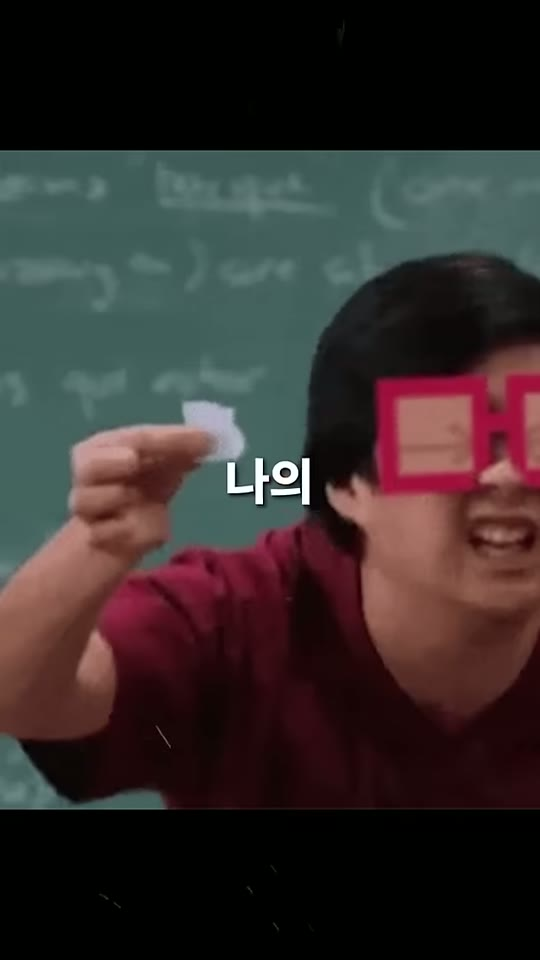
시작
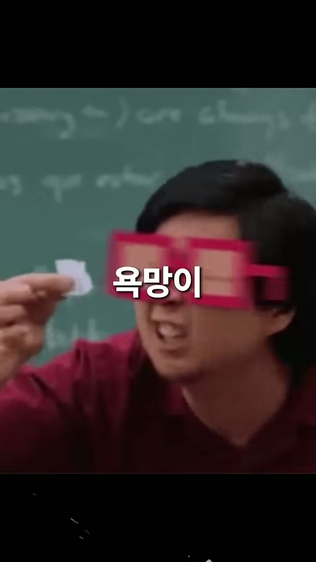
끝
영상 밴드
중앙 단어 자막
샷MCU(레터박스 밴드)앵글아이레벨카메라고정, 병합 경계: 42.067(자막 교체)구도밴드 y≈16~72%, 칠판 앞 남자가 분홍 종이 안경을 쓰고 종이쪽지를 들고 있음동작분홍색 사각 종이 안경을 쓴 남자가 흥분해서 쪽지를 흔듦대사알간지: "나의 특정 욕망이 투영되어"화면 자막'나의'→'특정'→'투영되어' (흰색)들어오는 전환하드컷효과음/음악BGM 지속역할'투영' = 색안경 시각 은유
1순위
hailuo-2-3
과장된 코믹 동작·빠른 리액션
2순위
pixverse-v6
카툰 스타일 밈 모션에 강함
3순위
grok-imagine-video-1-5
짧은 밈 루프 빠른 시안
① 이미지 프롬프트 (원본 클론)vertical 9:16 608x1080, pure black background with sparse drifting white dust specks and film-scratch particles, middle band (y 16%-72%) a fictional excited man in a maroon polo wearing oversized pink cardboard glasses holding up a scrap of paper in front of a green classroom chalkboard, sitcom look
② 영상 프롬프트 (원본 클론)1.6s: he shakes the paper excitedly and leans toward camera, locked-off.
③ 동물 버전 이미지 프롬프트vertical 9:16 608x1080, pure black background with sparse drifting white dust specks and film-scratch particles, middle band (y 16%-72%) Hamzzi the hamster wearing oversized pink cardboard glasses holding up a scrap of paper in front of a green chalkboard, realistic fur
④ 동물 버전 영상 프롬프트1.6s: Hamzzi waves the paper excitedly, glasses slipping, locked-off.
네거티브cartoon, anime, CGI look, plastic skin, text, letters, subtitles, captions, watermark, logo, trademarked cartoon characters, real celebrity likeness, extra limbs, extra fingers, deformed face, blurry, low resolution, jpeg artifacts
컷 117 · 결론 1(주관적 판단)
42.87s → 46.67s (3.8s)
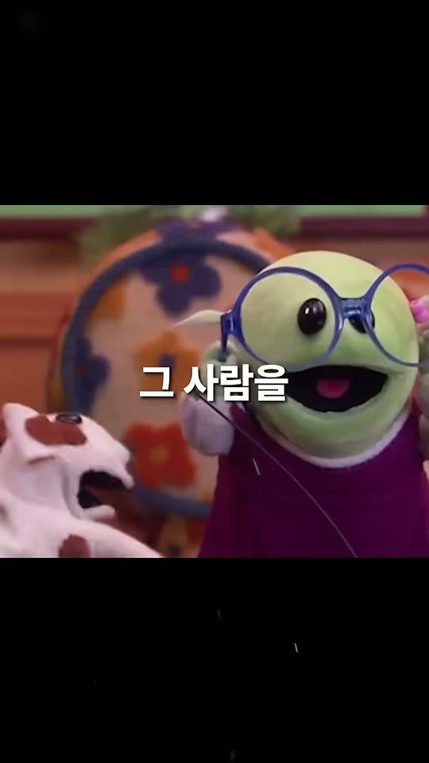
시작
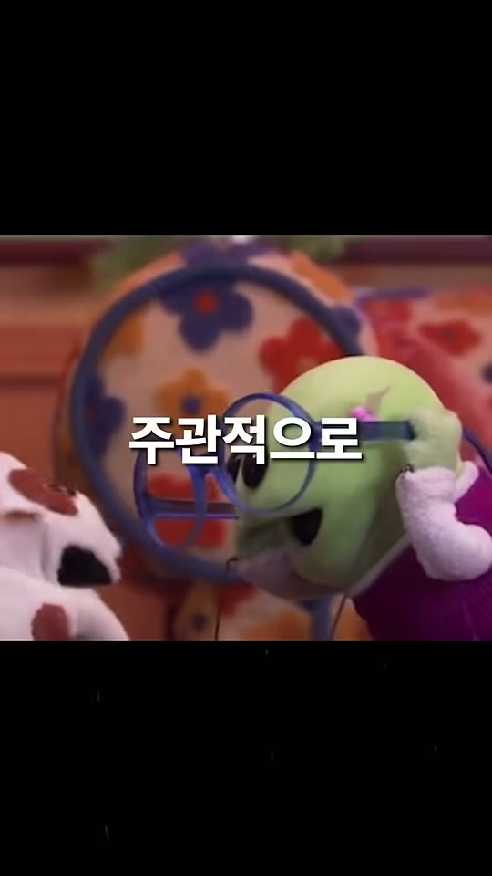
중간
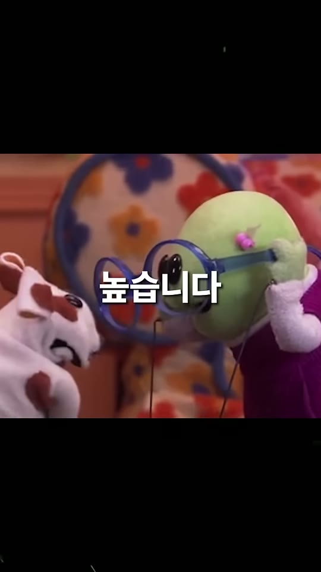
끝
영상 밴드
퍼펫
중앙 단어 자막
샷MCU(레터박스 밴드)앵글아이레벨카메라고정(단일 샷)구도밴드 y≈27~73%, 인형 더미 속 초록 퍼펫이 큰 파란 안경을 쓰고 우측 응시동작안경 쓴 초록 퍼펫이 고개를 갸웃거림대사알간지: "그 사람을 객관적으로 판단한 게 아니라 주관적으로 판단하고 있을 확률이 높습니다"화면 자막'그 사람을'→'객관적으로'→'게'→'주관적으로'→'판단하고'→'있을'→'높습니다' (흰색)들어오는 전환하드컷효과음/음악BGM 지속역할결론 1(주관적 판단)
1순위
hailuo-2-3
과장된 코믹 동작·빠른 리액션
2순위
pixverse-v6
카툰 스타일 밈 모션에 강함
3순위
grok-imagine-video-1-5
짧은 밈 루프 빠른 시안
① 이미지 프롬프트 (원본 클론)vertical 9:16 608x1080, pure black background with sparse drifting white dust specks and film-scratch particles, middle band (y 27%-73%) an original green felt puppet with huge round blue-rimmed glasses peeking out of a pile of plush toys in a colorful kids' TV set, generic original design
② 영상 프롬프트 (원본 클론)3.8s: the puppet tilts its head curiously and adjusts its glasses, locked-off.
③ 동물 버전 이미지 프롬프트vertical 9:16 608x1080, pure black background with sparse drifting white dust specks and film-scratch particles, middle band (y 27%-73%) Hamzzi wearing huge round blue-rimmed glasses peeking out of a pile of plush toys in a colorful playroom
④ 동물 버전 영상 프롬프트3.8s: Hamzzi tilts its head and pushes up its glasses with a paw.
네거티브text, letters, subtitles, captions, watermark, logo, trademarked cartoon characters, real celebrity likeness, extra limbs, extra fingers, deformed face, blurry, low resolution, jpeg artifacts
컷 118 · 시청자 상태 묘사(짝사랑 망상)
46.67s → 50.33s (3.66s)
시작중간끝
카툰 쥐
중앙 단어 자막
샷MCU(풀블리드)앵글아이레벨카메라고정, 병합 경계: 48.733(하트 소품 등장)구도풀블리드 청록 배경, 컵 가장자리에 기댄 갈색 카툰 쥐가 중앙, 위를 올려다봄동작쥐가 꿈꾸듯 위를 보며 볼을 받치고, 이후 하트 모양 쿠션을 끌어안음대사알간지: "그러니 누군가에게 집착하고 싶은 욕구가 마구 올라오고 불안감에 허덕이고 계신다면"화면 자막'그러니'→'집착하고'→'마구'→'올라오고'→'불안감에'→'허덕이고'→'계신다면' (흰색)들어오는 전환하드컷(레터박스→풀블리드)효과음/음악BGM 지속역할시청자 상태 묘사(짝사랑 망상)
1순위
hailuo-2-3
과장된 코믹 동작·빠른 리액션
2순위
pixverse-v6
카툰 스타일 밈 모션에 강함
3순위
grok-imagine-video-1-5
짧은 밈 루프 빠른 시안
① 이미지 프롬프트 (원본 클론)vertical 9:16 608x1080, original 2D classic-cartoon style: a small brown cartoon mouse leaning on the rim of a teal cup, gazing upward dreamily with cheeks in its hands, teal background, 1950s animation look, generic original design (not Jerry)
② 영상 프롬프트 (원본 클론)3.7s: the mouse sighs dreamily, then hugs a heart-shaped pillow, eyes sparkling, locked-off.
③ 동물 버전 이미지 프롬프트vertical 9:16 608x1080, 2D classic-cartoon style Hamzzi the golden hamster leaning on the rim of a teal cup, gazing upward dreamily, cheeks in paws, teal background
④ 동물 버전 영상 프롬프트3.7s: Hamzzi sighs dreamily, then hugs a heart-shaped sunflower seed, eyes sparkling.
샷CU(레터박스 밴드)앵글아이레벨 정면카메라고정, 병합 경계: 51.867(자막 교체)구도밴드 y≈22~78%, 금발 빨간 리본 애니 소녀가 양손으로 턱을 괴고 정면동작애니 소녀가 반짝이는 눈으로 꿈꾸듯 미소대사알간지: "나는 나의 어떤 환경 때문에 무슨 욕망을 갖게 되었는지"화면 자막'나의'→'환경'→'때문에'→'욕망을'→'되었는지' (흰색)들어오는 전환하드컷효과음/음악BGM 지속역할해결책 1(자기 인식 질문)
1순위
seedance-2-0
얼굴 초근접 미세표정(눈 굴림·입 벌림)
2순위
minimax-h3
대사 립싱크 포함 시
3순위
kling-v3
2D 스타일 유지력
① 이미지 프롬프트 (원본 클론)vertical 9:16 608x1080, pure black background with sparse drifting white dust specks and film-scratch particles, middle band (y 22%-78%) original 1990s cel-anime style: a blonde girl with a big red hair bow and mint sweater resting her chin on both hands, huge sparkling blue eyes, dreamy smile, warm room background, generic original character
② 영상 프롬프트 (원본 클론)3.0s: she sways slightly and blinks dreamily, sparkles in the eyes, locked-off.
③ 동물 버전 이미지 프롬프트vertical 9:16 608x1080, pure black background with sparse drifting white dust specks and film-scratch particles, middle band (y 22%-78%) 1990s cel-anime style Hamzzi with a big red bow resting its chin on both paws, huge sparkling eyes, dreamy smile
④ 동물 버전 영상 프롬프트3.0s: Hamzzi sways and blinks dreamily, eye sparkles.
샷CU(레터박스 밴드)앵글아이레벨 약간 측면카메라고정, 반짝이 빛망울 효과구도밴드 y≈18~82%, 흑발 앞머리 애니 소녀가 볼을 감싸고 황홀한 표정, 하단 분홍 빛망울동작애니 소녀가 두 손으로 볼을 감싸며 황홀해함대사알간지: "그 사람이 내 어떤 욕망을 충족시켜주길 기대하고 있는지"화면 자막'내'→'욕망을'→'충족시켜'→'주길'→'기대하고'→'있는지' (흰색)들어오는 전환하드컷효과음/음악BGM 지속역할해결책 2(기대 인식)
1순위
seedance-2-0
얼굴 초근접 미세표정(눈 굴림·입 벌림)
2순위
minimax-h3
대사 립싱크 포함 시
3순위
kling-v3
2D 스타일 유지력
① 이미지 프롬프트 (원본 클론)vertical 9:16 608x1080, pure black background with sparse drifting white dust specks and film-scratch particles, middle band (y 18%-82%) original 1990s cel-anime style: a girl with straight black hair and blunt bangs in a white beret cupping her cheeks with both hands, blissful open-mouth smile, pink and white bokeh sparkles, generic original character
② 영상 프롬프트 (원본 클론)3.0s: she sways blissfully, sparkles float up, locked-off.
③ 동물 버전 이미지 프롬프트vertical 9:16 608x1080, pure black background with sparse drifting white dust specks and film-scratch particles, middle band (y 18%-82%) 1990s cel-anime style Hamzzi in a white beret cupping its cheeks, blissful smile, pink bokeh sparkles
④ 동물 버전 영상 프롬프트3.0s: Hamzzi sways blissfully, sparkles float up.
① 이미지 프롬프트 (원본 클론)vertical 9:16 608x1080, extreme close-up of the face of a flat 2D hand-drawn cartoon devil, coral-red skin (#BF3E2A), thick slightly wobbly black ink outlines, two short curved charcoal-grey horns, heavy straight dark-grey eyebrows, half-lidded amber-orange eyes (#FAA325) with tiny dark pupils glancing sideways, deadpan expression, small mouth, two crossed beige bandage plasters on the chest, mouth open mid-sentence, face fills the frame, flat colors
② 영상 프롬프트 (원본 클론)1.2s: mouth flaps in 2-frame lip-sync, eyes steady on camera. Korean line: '인지할 필요가 있습니다'
③ 동물 버전 이미지 프롬프트vertical 9:16 608x1080, extreme close-up of the face of flat 2D hand-drawn cartoon hamster 'Hamzzi', golden-orange fur with cream cheeks and belly, thick slightly wobbly black ink outlines, tiny charcoal devil-horn headband, heavy straight dark eyebrows, half-lidded shiny black bead eyes glancing sideways, deadpan expression, small pink mouth, two crossed beige bandage plasters on the chest, mouth open mid-sentence, face fills the frame
④ 동물 버전 영상 프롬프트1.2s: Hamzzi talks with 2-frame lip-sync, whiskers twitch. Korean line: '인지할 필요가 있습니다'
샷MWS(의자 전신)앵글아이레벨 정면카메라고정(오프닝 1.83초 샷과 동일 프레이밍 = 수미상관)구도검정 배경 중앙 y≈22~84%에 암체어+악마동작삐딱하게 앉아 말함대사알간지: "모든 변화는 항상 인지하는 데서"화면 자막'변화는'→'현상을'(화면 표기, 추정 오탈자)→'인지하는'→'데서' (흰색)들어오는 전환하드컷(ECU→와이드 풀백)효과음/음악BGM 지속역할마무리 명언 빌드업
1순위
minimax-h3
립싱크+오디오 동시 생성, 무료 — 단순 2D 입모양이면 충분
2순위
kling-v3-omni
2D 캐릭터 일관성 + 대사 입모양
3순위
gemini-omni-1-1-flash
짧은 1초 내외 컷 빠른 생성
① 이미지 프롬프트 (원본 클론)vertical 9:16 608x1080, flat 2D hand-drawn cartoon devil, coral-red skin (#BF3E2A), thick slightly wobbly black ink outlines, two short curved charcoal-grey horns, heavy straight dark-grey eyebrows, half-lidded amber-orange eyes (#FAA325) with tiny dark pupils glancing sideways, deadpan expression, small mouth, two crossed beige bandage plasters on the chest, slouching cross-legged in a dark-red wingback armchair, centered, pure black background with sparse drifting white dust specks and film-scratch particles, flat colors
② 영상 프롬프트 (원본 클론)1.9s: lip-sync mouth flaps, eyes glance sideways, locked-off. Korean line: '모든 변화는 항상 인지하는 데서'
③ 동물 버전 이미지 프롬프트vertical 9:16 608x1080, flat 2D hand-drawn cartoon hamster 'Hamzzi', golden-orange fur with cream cheeks and belly, thick slightly wobbly black ink outlines, tiny charcoal devil-horn headband, heavy straight dark eyebrows, half-lidded shiny black bead eyes glancing sideways, deadpan expression, small pink mouth, two crossed beige bandage plasters on the chest, slouching cross-legged in a dark-red wingback armchair, centered, pure black background with sparse drifting white dust specks and film-scratch particles, flat colors
④ 동물 버전 영상 프롬프트1.9s: Hamzzi lip-syncs, whiskers twitch, locked-off. Korean line: '모든 변화는 항상 인지하는 데서'
샷ECU앵글아이레벨카메라하드 펀치인, 영상 끝(0.65초)구도얼굴 가득, 자막 정중앙동작입을 동그랗게 벌리며 마지막 말대사알간지: "시작하니까요!"화면 자막'시작하니까요!' (흰색)들어오는 전환펀치인 하드컷효과음/음악BGM이 끝까지 이어진 채 컷(페이드아웃 없음) → 루프 시 0초 절규와 붙음역할펀치라인/엔딩 + 루프
1순위
minimax-h3
립싱크+오디오 동시 생성, 무료 — 단순 2D 입모양이면 충분
2순위
kling-v3-omni
2D 캐릭터 일관성 + 대사 입모양
3순위
gemini-omni-1-1-flash
짧은 1초 내외 컷 빠른 생성
① 이미지 프롬프트 (원본 클론)vertical 9:16 608x1080, extreme close-up of the face of a flat 2D hand-drawn cartoon devil, coral-red skin (#BF3E2A), thick slightly wobbly black ink outlines, two short curved charcoal-grey horns, heavy straight dark-grey eyebrows, half-lidded amber-orange eyes (#FAA325) with tiny dark pupils glancing sideways, deadpan expression, small mouth, two crossed beige bandage plasters on the chest, mouth in a round 'O', face fills the frame, flat colors
② 영상 프롬프트 (원본 클론)0.65s: mouth pops open on the last word, static. Korean line: '시작하니까요!'
③ 동물 버전 이미지 프롬프트vertical 9:16 608x1080, extreme close-up of the face of flat 2D hand-drawn cartoon hamster 'Hamzzi', golden-orange fur with cream cheeks and belly, thick slightly wobbly black ink outlines, tiny charcoal devil-horn headband, heavy straight dark eyebrows, half-lidded shiny black bead eyes glancing sideways, deadpan expression, small pink mouth, two crossed beige bandage plasters on the chest, mouth in a round 'O'
④ 동물 버전 영상 프롬프트0.65s: Hamzzi's mouth pops open on the last word. Korean line: '시작하니까요!'
타임라인0-4.2 절규 밈→호스트 의자→ECU 질문 | 4.2-8.8 문 밈 약속→ECU 뜸→New Look 카드 | 8.8-27.2 학자사진→대학→아이들→A/B 원 카드→동전→쿠키 인형→동전 비교 카드 | 27.2-38.9 돋보기 펀치 교차→걷는 캐릭터→환호 아이들 | 38.9-56.3 NO 제스처→종이안경→퍼펫→꿈꾸는 쥐→애니 소녀 2컷 | 56.3-60.05 호스트 ECU→의자→ECU 엔딩
ASS 자막 스타일[Script Info]
ScriptType: v4.00+
PlayResX: 608
PlayResY: 1080
[V4+ Styles]
Format: Name, Fontname, Fontsize, PrimaryColour, SecondaryColour, OutlineColour, BackColour, Bold, Italic, Underline, StrikeOut, ScaleX, ScaleY, Spacing, Angle, BorderStyle, Outline, Shadow, Alignment, MarginL, MarginR, MarginV, Encoding
Style: Word,Pretendard ExtraBold,46,&H00FFFFFF,&H00FFFFFF,&H00000000,&H99000000,-1,0,0,0,100,100,0,0,1,0,3,5,20,20,0,1
Style: Quote,Pretendard SemiBold,18,&H00FFFFFF,&H00FFFFFF,&H00000000,&H99000000,0,0,0,0,100,100,0,0,1,0,1,5,20,20,0,1
Style: Card,Pretendard ExtraBold,44,&H000500B3,&H000500B3,&H00000000,&H00000000,-1,0,0,0,100,100,0,0,1,0,0,5,20,20,0,1
[Events]
Format: Layer, Start, End, Style, Name, MarginL, MarginR, MarginV, Effect, Text
; 단어 1개씩, 정중앙(304,540), 등장 시 70%→100% 80ms 팝
Dialogue: 0,0:00:00.00,0:00:00.20,Word,,0,0,0,,{\pos(304,540)\fscx70\fscy70\t(0,80,\fscx100\fscy100)}너
Dialogue: 0,0:00:00.20,0:00:00.40,Word,,0,0,0,,{\pos(304,540)\fscx70\fscy70\t(0,80,\fscx100\fscy100)}없이
Dialogue: 0,0:00:03.43,0:00:04.17,Word,,0,0,0,,{\pos(304,540)\fscx70\fscy70\t(0,80,\fscx100\fscy100)}힘드신가요?
Dialogue: 0,0:00:07.93,0:00:08.80,Card,,0,0,0,,{\pos(304,540)\fad(200,0)}New Look 이론
Dialogue: 0,0:00:20.77,0:00:27.23,Quote,,0,0,0,,{\pos(304,465)}“동전과 똑같은 크기의 원을 골라!”
Dialogue: 0,0:00:20.77,0:00:21.40,Word,,0,0,0,,{\pos(304,540)\fscx70\fscy70\t(0,80,\fscx100\fscy100)}{\c&H0800B2&}빈곤층{\c&HFFFFFF&}인
Dialogue: 0,0:00:22.40,0:00:22.90,Word,,0,0,0,,{\pos(304,540)\fscx70\fscy70\t(0,80,\fscx100\fscy100)\c&H0800B2&}큰
Dialogue: 0,0:00:24.90,0:00:25.40,Word,,0,0,0,,{\pos(304,540)\fscx70\fscy70\t(0,80,\fscx100\fscy100)\c&H01D4FE&}비슷한
Dialogue: 0,0:00:40.17,0:00:41.23,Word,,0,0,0,,{\pos(304,715)\fs30}{\c&H01D4FE&}NO {\c&HFFFFFF&}NO NO
Dialogue: 0,0:00:59.40,0:01:00.05,Word,,0,0,0,,{\pos(304,540)\fscx70\fscy70\t(0,80,\fscx100\fscy100)}시작하니까요!
HyperFrames 편집 프롬프트 (Claude에 그대로 붙여넣기)HyperFrames로 608x1080(9:16) 30fps, 총 60.05초 컴포지션을 만들어줘. 제목 바·댓글 카드 없음(풀스크린형). 배경 레이어: 검정(#000000) + 흰 먼지 파티클 루프(opacity 0.6) 전체 구간. 영상 트랙(ms): 0-800 우는 아이 ECU 풀블리드(0/400ms 두 번 115% 줌 펄스, 각 120ms) / 800-1830 하이앵글 다리 매달리기 / 1830-3430 호스트(햄찌) 암체어 와이드, 밴드 y 22~84% / 3430-4170 호스트 얼굴 ECU(하드 펀치 300%, 5° 롤) / 4170-7230 문 앞 손짓 밈 풀블리드 / 7230-7930 호스트 ECU / 7930-8800 텍스트 카드 'New Look 이론'(#B30005, 44px, 200ms 페이드인) / 8800-9530 흑백 노교수 사진 / 9530-11630 대학 건물 / 11630-13230 뛰는 아이들 / 13230-15430 원 카드(A 빨강 링 #B20008 270ms에 300ms 페이드인, B 노랑 링 #FED401 770ms에) / 15430-16700 동전 매크로 / 16700-20770 쿠키 인형 레터박스 y 24~76% + 동전 스티커 머리 위 / 20770-27230 동전 비교 카드(1730ms에 빨간 큰 원 400ms 스트로크 드로우, 3230ms 리셋, 4230ms 노란 원 드로우) / 27230-30830 돋보기 카툰, 500ms마다 100%↔180% 하드 펀치 교차 / 30830-33730 걷는 캐릭터 밴드 y 26~74% / 33730-38930 환호 아이들 밴드 y 32~68% / 38930-41230 NO 제스처 밴드 y 21~79%, 1240ms부터 하단 y 66%에 'NO'(노랑)→'NO NO NO' 130ms 간격 팝 / 41230-42870 종이 안경 밴드 y 16~72% / 42870-46670 안경 퍼펫 밴드 y 27~73% / 46670-50330 꿈꾸는 쥐 풀블리드 / 50330-53330 애니 소녀1 밴드 y 22~78% / 53330-56330 애니 소녀2 밴드 y 18~82% / 56330-57500 호스트 ECU / 57500-59400 호스트 암체어 / 59400-60050 호스트 ECU. 전환은 전부 하드컷(디졸브 금지). 자막: 내레이션 단어 1개씩(평균 300~500ms) 정중앙 (304,540), Pretendard ExtraBold 46px 흰색, 드롭섀도 3px 검정 60%, 등장 시 scale 0.7→1.0 80ms ease-out, 키워드 '빈곤층·큰' 빨강 #B20008, '비슷한'·첫 'NO' 노랑 #FED401. 20770-27230 구간 y 43%에 고정 인용 소자막 18px. 오디오: 내레이션 + 경쾌한 BGM 끊김 없이, 최종 -13 LUFS(원본 -12.8, LRA 2.3로 강하게 압축).
✅ 똑같이 만들기 체크리스트
고정 제목/댓글 카드 넣지 말 것 — 이 영상은 풀스크린+가변 레터박스형
배경은 순검정이 아니라 검정+흰 먼지 파티클 루프
자막은 단어 1개씩 정중앙 y 50%, 작게→크게 80ms 팝, 흰색+드롭섀도
키워드 색: 빈곤층/큰 = #B20008, 비슷한/NO = #FED401, 개념 카드 = #B30005
호스트는 2D 플랫(명암 없음) + 반창고 X + 붉은 암체어, 와이드↔ECU 300% 펀치 교대
전환은 100% 하드컷, 페이드아웃 엔딩 금지(루프용)
BGM 무음 구간 없이 깔고 -13 LUFS 근처로 강하게
⚠️ 저작권 밈(스폰지밥·심슨·세서미·톰과제리·세일러V·카드캡터·Schitt's Creek·Community)과 실존 인물 사진은 그대로 쓰지 말고 오리지널 생성물로 교체
🐹 동물 버전 기획호스트 악마 → 햄찌(골든 햄스터, 같은 2D 플랫 손그림 스타일, 작은 악마뿔 머리띠+반창고 X 유지, 같은 붉은 암체어). 밈 B롤은 전부 '햄찌 월드' 오리지널 클립으로 교체(문 가리키는 햄찌, 돋보기 햄찌, 해바라기씨 쿠키, 꿈꾸는 햄찌 등). 실사 푸티지(아이들·손·건물)는 햄스터 무리/햄스터 발/햄스터 대학으로 치환. 그대로 둘 것: 대본·타이밍(26컷, 초 단위 동일)·단어 팝 자막·색 코딩·검정 먼지 배경·가변 레터박스 위치·하드컷·BGM 톤. 바꿀 것: 캐릭터/밈 소스, 목소리 피치(+2~3반음).